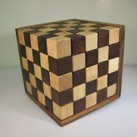

Z-Bin Packing

This is a difficult 3d puzzle involving fitting 25 roughly z-shaped peices perfectly into a 5x5 cube.
To perform this bin packing we set the Board to be the 5x5 cube and then "tile" the space. Every
possible position the z-shaped peice could take is expressed with a DesObj.
We utilize TransSim to allow simultaneous transitions and then only allow 2 stages.
so that the Board starts all 0 (unused) and then is filled by simultaneous transitions,
in a single stage, to be all 1 (used). Based on which DesObj where used, we know where the z-shaped peices go.
Writing out all of possible positions the z-shaped peice could have would be onerouse, so it is better to
write a script (generate.py) to perform this task for us.
generate | source | solution